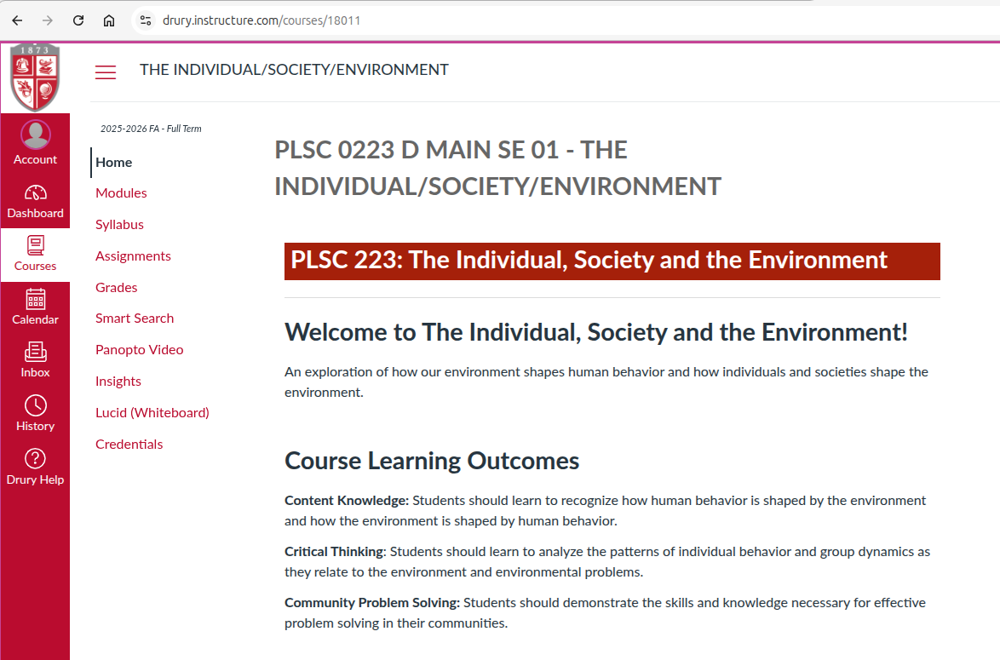
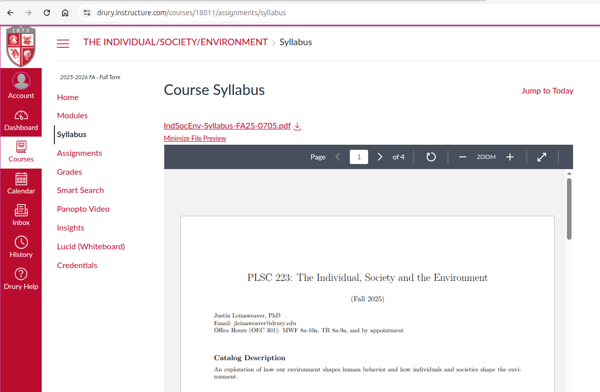
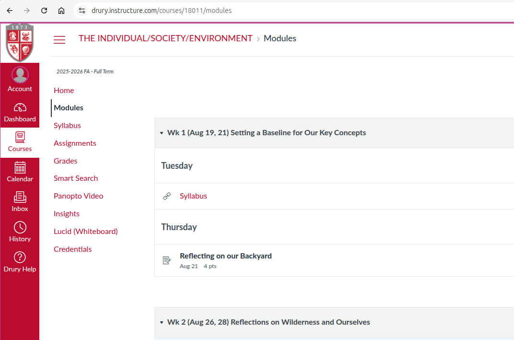

Today’s Agenda
PLSC 223
- The Individual, Society and the Environment
Justin Leinaweaver (Fall 2026)
Current Events Check-in
What’s going on in the world of environmental problems or policy?
What happened?
Why should we care about it?
Why is this an “environmental” issue?
Introductions
Name
Year in school
Major
PLSC, Certificate or Explorations?
Designing Solutions for Environmental Problems
Required Courses
PLSC 223 The Individual, Society and the Environment
BIOL 163 Science of the Environment
ECON 225 Introduction to Environmental Economics
PLSC 323 Issues in Environmental Policy



